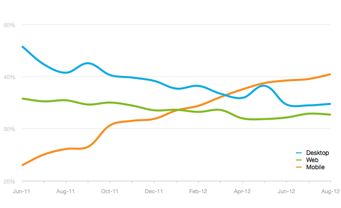

Your browser doesn't support the features required by impress.js, so you are presented with a simplified version of this presentation.
For the best experience please use the latest Chrome, Safari or Firefox browser.
How to convert this ...
Into this ...
With all possibilities provided

Email Client Popularity (1)
Mobile email now in the lead

Email Client Popularity (2)
Most popular email clients
September 2012.
Email Client Popularity (3)
Movers and Shakers
Average usage between 2011 and 2012.
XML / XSLT to HTML
HTML Emails design constraints
- Limited to email client preview window
- Images often blocked initially
- Use nested HTML tables
- use inline styles CSS
- Do not use PNG and SVG images
- Do not use JavaScript
Add selectors to rule e-mail clients
-
/* prevent Outlook 2007 borders and 1px padding on table cells! */
table td {border-collapse:collapse;}
-
/* Force Outlook to provide a "view in browser" menu link. */
#outlook a {padding:0;}
-
/* Force Hotmail to display emails at full width */
.ReadMsgBody {width:100%;}
.ExternalClass {width:100%;}
.ExternalClass, .ExternalClass span, .ExternalClass td, .ExternalClass div {line-height:100%;}
-
/* Prevent Webkit and Windows Mobile platforms from changing default font sizes */
body {-webkit-text-size-adjust:100%; -ms-text-size-adjust:100%;}
Design for mobile and tablets
- The <meta> tag
<meta name="viewport" content="width=device-width, initial-scale=1.0"/>
- The media query
@media only screen and (max-device-width: 480px) {
body[style] table.vcrT305 {width:305px!important;}
body[style] table.vcrHid {display:none!important;}
/*Stop Yahoo! Mail from rendering your Media Queries*/
body[yahoo] .t650 {width:650px;}
...
}
@media (max-device-width: 1024px) and (orientation: landscape)
@media (max-device-width: 768px) and (orientation: portrait)
@media only screen and (min-device-pixel-ratio : 1.5)
...
Testing email with web browsers
- Web browsers with an XML/XSL parser :

- Opera Mobile Emulator
Testing with
Questions